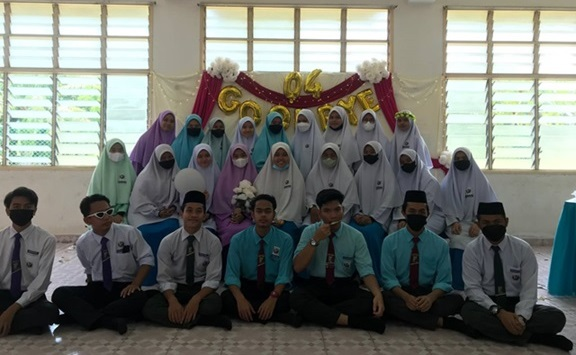

we have been friends since we were 6 years old until now. They are always with me whem I'm happy or sad. They are my bestfriend and I also I have also considered them as my family. We always spend a lot of time together to hangout or sleepover.
Fatin Farhana
Fatin Najiha
Highschool
They always help me in subject that i stucked. So I'm very glad to have them as my friend on that time. They also like to make a group discussion or study group together, so that we can learn any subject that we are weak and also help with each other. It make me happy to be friends with them.

University
I have got so many friends on university levels. they are very supporting and friendly especially my classmate. It was very easy at the first time to communicate and make a friends with them. They always have a good personalities and friendly woith each other. But there are two person that has become my friends which that i very colse with them.
Anis and Ain is my coolest friends. We start be friends when we are roommate at semester 1 and 2. They are very cheerfull and very kind person. They also has helped me a lot when i stuck on the certain subject or the assignment.